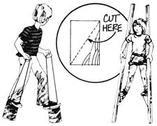

Here are a few more of THE Mother Earth News (restricted) syndicated features which have appeared in 100+ newspapers over the past four and a half years.
Coloring fabrics and wool yarn with natural dyes is another of the old-time arts that is suddenly right back in the highest fashion. Many leaves, berries, and vegetables can be used for this purpose and one of the easiest to start with is the common, ordinary cooking onion. With only one pound of papery brown onion skins (that you'd ordinarily throw away) you can dye one pound of wool (yarn, a sweater, or whatever) a rich, burnt orange hue.
Prepare the wool for dyeing with a mordant to make the colors stick rather than wash out and fade. Do this by dissolving four ounces of alum (available from drug and grocery stores) and one ounce cream of tartar in four gallons of water. Wet the wool thoroughly in plain water, squeeze it out, and then immerse it in the chemical solution. Heat slowly to boiling and turn and stir the wool frequently as you boil it gently for one hour.
While the wool is mordanting, boil the onion skins for 30 minutes and strain the liquid into a dye bath. Squeeze excess alum solution out of the wool, immerse the wetted yarn or garment in dye, and steep for one hour in hot bath. Rinse and dry wool. Repeat the steep-rinse-dry cycle once or twice for more durable color.
This is the time of year, it seems, when the spring on the back porch door always needs to be replaced (I guess because the young'uns fan in and out so much). This is also the season when neighborhood strays most persistently attack your loaded and fragrant garbage can the night before its contents are due to be picked up.
So OK. Let's put two and two together. Recycle that old screen door spring by permanently fastening one end to one handle of the garbage can and bending the loop on the other end into an easily fastened hook. Then, whenever you place the lid on the container, run the spring through the top's handle and secure it to the second handhold on the can. That way, no dog will be able to get the lid off . . . but the trashman can.
Sure now, and what's summer without a pair of tin can walkers or stilts for the kids to fight overt There's nothing more traditional or old-timey or fun ( or as apt to guarantee a twisted ankle) as these do-it-yourself granddaddies of today's platform shoes.
The tin can walkers, of course, are nothing but large juice containers turned upside down with heavy cord or twine bridles run through holes punched near their bottom rims.
Stilts are a little more complicated. Each is a length of 2 X 2 with a triangular section of 2 X 4 or 2 X 8 securely bolted (try two 1/4" carriage bolts on each support) to the upright. Youngsters who appreciate such equipment the most (those who are about six to twelve years of age) can usually construct their own walkers . . . but dad should figure on lending a hand with the fabrication of stilts.
|
|
|
 |